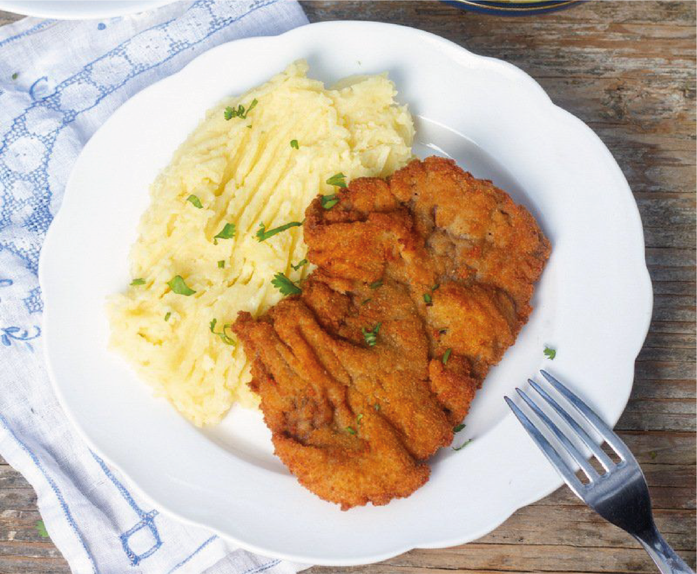
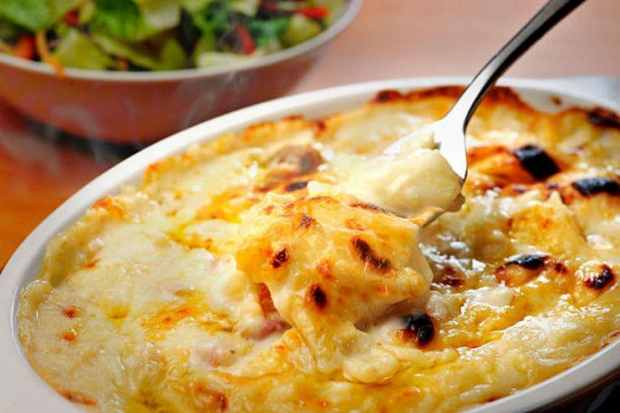

Milanesas con pure

INGREDIENTES PARA MILANESAS
Carne de ternera 500gr (puede ser pollo o cerdo).
PASOS A SEGUIR
Salar la carne.
En un recipiente colocar:
Provensal, sal y pimienta.
Mezclar todo hasta tener una mezcla homogénea.
Colocar los bifes de ternera en la mezcla y dejar reposar por 5mins.
Pasar por pan rallado los bifes.
Colocar las milanesas en una placa para horno previamente aceitada.
Meter la placa en el horno a 180° hasta que esten doradas.
INGREDIENTES PARA PURE
PASOS A SEGUIR
Pelar y cortar las papas.
En un olla con agua colocar las papas y dejar hervir hasta que esten blandas.
Colar las papas y pisarlas hasta que se forme un pure.
Agregar leche para aportar cremocidad.
Condimentar con:
OPCIONAL: rallar 1 diente de ajo.
¡Emplatar y disfrutar!
La cantidad de ingredientes varia segun la cantidad de personas.
Pollo gratinado con papas al horno

INGREDIENTES PARA POLLO
Queso muzzarella (a gusto).
PASOS A SEGUIR
Cortar las pechugas de pollo en cubos.
Cortar la cebolla en juliana.
En una sarten con un poco de aceite cocinar primero el pollo hasta que este dorado.
Por otro lado dorar las cebollas.
En un recipiente colocar la crema, el huevo, sal y pimienta a gusto y mexclar.
En una fuente (apta para horno) colocar le pollo junto con la cebolla, agregar la mezcla de crema con huevo, el queso muzzarella (cordado en cubitos y el queso tybo (rallado).
Llevar a horno precalentado a 180° hasta que gratine.
INGREDIENTES PARA PAPAS
PASOS A SEGUIR
Pelar las papas y cortar en cubo o rodajas.
Color en una placa previamente aceitada.
Condimentar (a gusto) con:
Mandar a horno precalentado a 180°.
Una vez doradas dar vuelta y condimentar nuevamente por el otro lado.
¡Emplatar y disfrutar!
Los ingredientes varian segun la cantidad de personas.
Albondigas

INGREDIENTES PARA ALBONDIGAS
PASOS A SEGUIR
Picar el perejil y la cebolla.
OPCIONAL: dorar la cebolla para mas sabor.
En un recipiente colocar la carne, los huevos, el pan rallado, el perejil, la cebolla y los condimentos.
Amasar hasta que todo se incorpore.
Añadir harina a la mezcla hasta obtener una masa maleable y compacta (esto depende del gusto de cada uno pero con dos cdas soperas debería ser suficiente).
Formar bolitas y pasarlas por pan rallado.
Colocar aundante cantidad de aceite en una olla, una vez caliente cocinar las albondigas hasta que esten doradas.
¡Emplatar y disfrutar!
Los ingredientes varian segun la cantidad de personas.